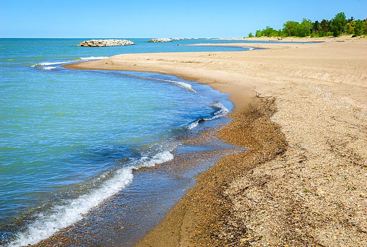

Independence National Park and the Liberty Bell
One of America's most historic areas and home to the Liberty Bell, Independence National Historical Park in Philadelphia is a national treasure. Independence Hall is the central attraction at the park, famous as the site where the Declaration of Independence was signed and where the Constitution was drafted. The Liberty Bell sits on display across from Independence Hall, surrounded by a series of exhibits describing its history.
Independence Mall, laid out in 1948, extends north of here, forming the remainder of the park, which is paved with old cobblestone streets. Here, you will find historic buildings, like Congress Hall and Old City Hall, and museums including the Ben Franklin Museum and the National Museum of American Jewish History.
Address: 143 S. 3rd Street, Philadelphia, Pennsylvania
Hershey Park
Families will enjoy an outing to this famous amusement park in Hershey, a town also closely associated with chocolate. Hershey Park is the town's main attraction with 90 acres of rides and entertainment for kids and adults, ranging from roller coasters to aquatic shows
The park was originally built in 1906 as a recreational area for Hershey's workers but expanded over the years to attract visitors from all over. Hershey Park continues to expand, offering a wide range of things to do for all ages. In addition to kiddie rides, the park has all the family favorites like a carousel, train, bumper cars, and Ferris wheel. There are also several water rides perfect for a hot summer's day and more than a dozen roller coasters designed to thrill.
Other attractions include midway-style games and two large video arcades. Adjacent to the park and included in admission is ZooAmerica. Here, visitors can see more than 200 animals from North American habitats, including bald eagles, mountain lions, and even roadrunners. Zoo guests can also sign up for special behind-the-scenes tours to get a closer look and an opportunity to help feed the animals. For those who want to skip the big park and just visit the zoo, admission is available at a lower rate.
Address: 100 Hersheypark Drive, Hershey, Pennsylvania
Gettysburg National Military Park
The Gettysburg National Military Park in Gettysburg is the site of Gettysburg Battlefield, where in 1863 this Civil War battle was responsible for 51,000 casualties over a three-day period. Hundreds of markers and monuments now grace the park. Key highlights are Seminary Ridge, which was the primary Confederate position west of Gettysburg for days two and three of the battles; Cemetery Ridge, the site of Union Lines for the final two days of battle; and Oak Ridge, the site of the opening day battle of the Civil War.
The Park Museum and Visitor Center has several exhibits, including the Rosensteel collection, which is one of the largest collections of Civil War uniforms, weapons, and personal items in the United States. The park also hosts living history programs and reenactments and has extensive horseback riding trails.
Address: 1195 Baltimore Pike (Route 97), Gettysburg, Pennsylvania
Presque Isle State Park
One of the top parks in Pennsylvania, Presque Isle State Park sits on a peninsula that curves out into Lake Erie, creating Presque Isle Bay, an important shipping and transport center. The park is open daily year-round and has plenty to offer, including 11 miles of beach and several hiking trails.
As well as swimmers and sunbathers, many visitors come here to collect colorful "sea" glass that has washed ashore. Kite-flyers also love the open space and lake winds, and Sunset Point is a favorite spot. The park also hosts seasonal events and summer concerts that are free and open to the public.
At the entrance of the park, the Tom Ridge Environmental Center houses exhibits about the local history and ecosystems. The center also facilitates activities and has a 75-foot observation tower from which you can admire the surrounding park and lake. There are also amazing views of the lake from atop the Lighthouse on Presque Isle, which can be visited by guided tour, as well as the lesser-known Lighthouse on North Pier.
Philadelphia Museum of Art

The Philadelphia Museum of Art houses one of America's largest collections of art and is also an iconic building in the city. The museum's front steps were featured in all of the "Rocky" movies, and from the top of these steps is a grand view down Benjamin Franklin Parkway to the landmark tower of City Hall.
Inside, the museum's permanent collections include a wide range of art, including an extensive European collection featuring works by Rembrandt, Cézanne, Matisse, Monet, Picasso, Renoir, Chagall, and Manet. Other galleries include those dedicated to textiles and fashion, American colonial furniture, and an outdoor sculpture garden.
Address: 2600 Benjamin Franklin Parkway, Philadelphia, Pennsylvania